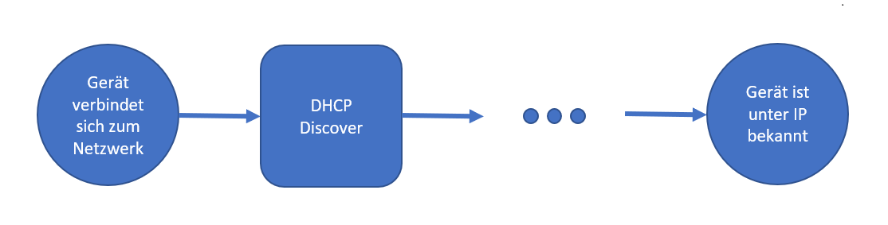

Hier stand eine Abbildung, deren Nutzungsrechte für die Webseite nicht geklärt sind.
Wie du bereits weißt, benötigen Netzwerkgeräte IP-Adressen, um miteinander kommunizieren zu können. Je nachdem, mit welchem Netz sich ein Gerät verbindet, bekommt es eine andere IP-Adresse zugewiesen: zu Hause eine andere als in der Schule. Damit die Vergabe geordnet abläuft, verwenden Netze ein Protokoll, also ein festes Schema, nach dem der Vergabeprozess abläuft. Dieses Protokoll heißt DHCP (Dynamic Host Configuration Protocol).
DHCP weist Geräten beim Verbinden mit einem Netz automatisch eine IP-Adresse und weitere wichtige Netzwerkeinstellungen zu. Das vereinfacht die Verwaltung der IP-Adressen in einem Netz erheblich. Obwohl DHCP Adressen der Internetschicht vergibt, ist es selbst ein Anwendungsprotokoll: Es läuft über UDP, der Server nutzt Port 67, der Client Port 68.
Wenn sich ein Gerät mit einem Netz verbindet und noch keine IP-Adresse hat, sucht es nach einem DHCP-Server. Dazu sendet es per Broadcast eine Nachricht (den sogenannten DHCP-Discover) mit dem Wunsch, eine IP-Adresse zu erhalten. Da es noch keine eigene Adresse hat, verwendet es als Quell-IP-Adresse 0.0.0.0.
Eine Broadcast-Nachricht ist an die Broadcast-Adresse gerichtet – bei IP an 255.255.255.255 (bzw. die Broadcast-Adresse des Subnetzes), bei Ethernet an die MAC-Adresse FF:FF:FF:FF:FF:FF. Deshalb wird sie jedem Teilnehmer im lokalen Netz zugestellt. Router leiten Broadcasts nicht in andere Netze weiter. Kennt ein Netzwerkgerät die Adressen seiner Netzwerknachbarn noch nicht, kann es auf diese Weise trotzdem Kontakt aufnehmen.
Erhält ein DHCP-Server einen Discover, prüft er, ob er noch eine freie IP-Adresse hat. Jeder DHCP-Server ist für einen eigenen Adressbereich (Pool) zuständig.
Ist eine Adresse frei, sendet der Server dem Client ein DHCP-Offer. Es enthält die angebotene IP-Adresse, die Subnetzmaske, das Standard-Gateway, den DNS-Server, die Dauer der Leihzeit (Lease) sowie die IP-Adresse des DHCP-Servers als Kennung. Da der Client noch keine IP-Adresse besitzt, wird das Offer an seine MAC-Adresse geschickt (je nach Client auch per Broadcast). Der Server merkt sich die angebotene Adresse vor, damit er sie nicht gleichzeitig einem anderen Client anbietet.
Der Client erhält ein oder mehrere Offers und entscheidet sich für ein Angebot. Er sendet daraufhin einen DHCP-Request – wieder per Broadcast, denn er hat immer noch keine gültige Adresse. Der Request enthält die Kennung des gewählten Servers. So erfahren alle DHCP-Server im Netz gleichzeitig, welches Angebot angenommen wurde: Der gewählte Server bestätigt, die anderen geben ihre vorgemerkten Adressen wieder frei.
Im letzten Schritt sendet der gewählte DHCP-Server dem Client eine Bestätigung, dass die IP-Adresse nun erfolgreich ausgeliehen wurde. Dieser Schritt heißt DHCP-Acknowledgement (ACK). Erst jetzt übernimmt der Client Adresse, Maske, Gateway und DNS-Server. Kann der Server die Adresse nicht mehr vergeben, antwortet er stattdessen mit einem DHCP-NAK, und der Client beginnt von vorn.
Hier stand eine Abbildung, deren Nutzungsrechte für die Webseite nicht geklärt sind.
Alltag: Die FRITZ!Box verwendet ab Werk das Netz 192.168.178.0/24. Sie selbst hat die Adresse 192.168.178.1 und verteilt per DHCP Adressen aus dem Bereich 192.168.178.20 bis 192.168.178.200. Darum bekommt dein Handy zu Hause eine Adresse wie 192.168.178.34 – in der Schule oder im Café dagegen eine ganz andere. Diese private Adresse sieht im Internet niemand: Nach außen erscheinen alle Geräte des Haushalts mit der einen öffentlichen Adresse der FRITZ!Box (NAT, → 7.5). Unter „Heimnetz“ kannst du für den Drucker festlegen, dass er immer dieselbe Adresse bekommt.
Beruf: Im Firmennetz richten Systemintegratorinnen und Systemintegratoren DHCP-Bereiche (Scopes) für jedes Subnetz ein, reservieren feste Adressen für Drucker und Server und überwachen die Auslastung der Pools. Typisches Ticket am Montagmorgen: „Die neuen Laptops bekommen eine Adresse 169.254.x.x und kein Netz.“ Ursache ist dann meist ein ausgefallener DHCP-Server oder ein voller Adress-Pool.
DHCP: Protokoll (UDP, Ports 67/68), mit dem ein DHCP-Server einem Client für eine begrenzte Zeit (Lease) IP-Adresse, Subnetzmaske, Standard-Gateway und DNS-Server zuweist.
DORA: Der Ablauf besteht aus vier Nachrichten: Discover, Offer, Request, Acknowledgement. Offer und Acknowledgement kommen vom Server und enthalten die Konfiguration.
Broadcast: Discover und Request werden per Broadcast gesendet, weil der Client noch keine gültige IP-Adresse hat und alle DHCP-Server von seiner Wahl erfahren sollen.

Erstelle in deinem Hefter einen Ablaufplan, der alle Teilschritte von DHCP abbildet. Ergänze unter jedem Teilschritt Stichpunkte, die den Vorgang beschreiben. Die einzelnen Schritte werden im Folgenden erklärt.
Warum weisen sich Netzwerkgeräte bei IPv4 nicht einfach selbst eine IP-Adresse zu?